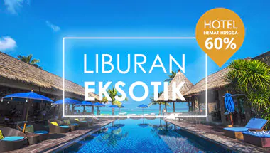

MALDIVES
Paket Liburan PRIVATE TRIP TERMURAH !!!
-
7 Tips Liburan Hemat dan Menyenangkan
Lokasi berlibur di Indonesia sangat luas dan ada sangat banyak tempat-tempat indah disini yang pastinya akan membuat liburan kamu semakin hemat, menyenangkan, dan pastinya semakin dekat dengan keluargamu. Jadi, buat kamu yang ingin liburan hemat dan menyenangkan, ayo baca tips berikut ini....
-
10 Tempat Berlibur Terbaik dan Termahal Di Dunia
Jadi, ayo siapkan uangmu dan datanglah ke 10 tempat liburan terbaik dan termahal di dunia ini. Diibaratkan besaran kurs USD1 adalah Rp13.000.
-
7 Tempat Paling Unik di Dunia
Keindahan alam di dunia sangat beragam. Beberapa di antaranya terlihat menakjubkan, hingga seperti berada di dunia dongeng. Seperti beberapa tempat unik di dunia berikut ini. Sebuah wisata alam yang bahkan tidak bisa ditemukan di tempat lain, karena saking indahnya. Siap-siap masukkan wisata berikut ini dalam waiting list liburanmu ya.
Our Promo
